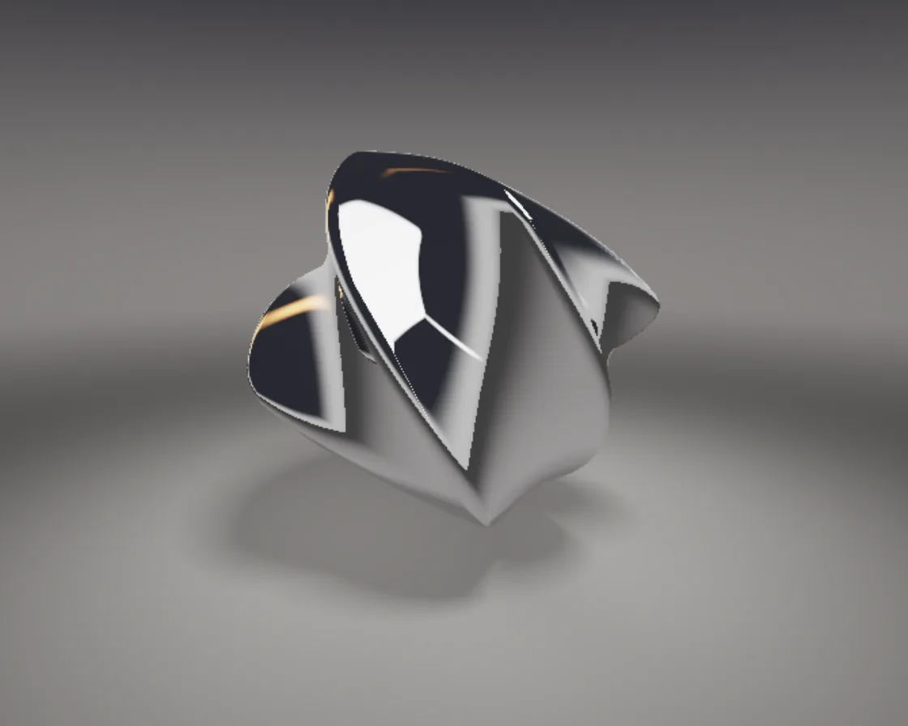

SDF shape morph
SDF shape morph is a WebGL effect: five distance functions blended in turn, twisting at each midpoint. One plain JavaScript file with no dependencies; add it with npx motion-library add sdf-morph.

Open it live, tune it and copy the code
What is SDF shape morph?
A chrome object morphs from sphere to cube, torus, octahedron and a gyroid-carved sphere.
How does SDF shape morph work?
Two signed distance functions are blended by an eased amount while space twists around the vertical axis, with the twist peaking halfway.
How do I add SDF shape morph to my website?
- In your project folder, run
npx motion-library add sdf-morph. It writesanimations/sdf-morph.js. Needs Node 18 or newer. - Import it and call it with a container element that has a size:
import fx from './animations/sdf-morph.js'; const stop = fx(document.querySelector('#hero')); - Call
stop()to clean up, for example when a component unmounts.
Every setting below is also a flag, so you can install it already tuned: npx motion-library add sdf-morph --hold 4.
What settings can I tweak?
| Setting | Flag | Default | Range | Step |
|---|---|---|---|---|
| Hold (s) | --hold | 1.4 | 0.3 to 4 | 0.1 |
| Morph (s) | --morph | 1.3 | 0.3 to 3 | 0.1 |
| Twist | --twist | 1 | 0 to 3 | 0.05 |
Specifications
- Renderer
- WebGL
- Category
- Chrome & 3D
- Dependencies
- None
- File size
- 9.2 KB, unminified
- Interactive
- No: it plays on its own
- Reduced motion
- Plays the same for everyone
- Licence
- MIT-0: use it anywhere, no credit needed
Source code
// SDF morph: one chrome object that turns into five shapes: sphere, rounded cube, torus, octahedron and a
// sphere carved by a gyroid lattice. Each shape is a distance function; during a morph the two distances are
// blended with an ease-in-out, and the object twists around its axis at the midpoint. Rays reflect once, so
// the carved lattice mirrors itself, and the floor gets a soft shadow marched toward the light.
const PARAMS = { hold: 1.4, morph: 1.3, twist: 1 };
export default function (stage) {
const canvas = document.createElement('canvas');
canvas.style.cssText = 'position:absolute;inset:0;width:100%;height:100%;display:block';
stage.append(canvas);
const gl = canvas.getContext('webgl2', { antialias: false });
if (!gl) { stage.textContent = 'This needs WebGL2.'; return () => canvas.remove(); }
const vs = `#version 300 es
in vec2 p; out vec2 uv; void main() { uv = p * .5 + .5; gl_Position = vec4(p, 0, 1); }`;
const fs = `#version 300 es
precision highp float; in vec2 uv; out vec4 o;
uniform vec2 R; uniform float T, E, TW, BOB, K; uniform int A, B; uniform mat3 ROT; uniform vec3 CE, CF, CR, CU;
const vec3 C = vec3(0, 1.15, 0), LD = vec3(.35, 1., .25);
float sdBox(vec3 p, vec3 b, float r) { vec3 q = abs(p) - b; return length(max(q, 0.)) + min(max(q.x, max(q.y, q.z)), 0.) - r; }
float sdOct(vec3 p, float s) {
p = abs(p); float m = p.x + p.y + p.z - s; vec3 q;
if (3. * p.x < m) q = p.xyz; else if (3. * p.y < m) q = p.yzx; else if (3. * p.z < m) q = p.zxy; else return m * .57735027;
float k = clamp(.5 * (q.z - q.y + s), 0., s); return length(vec3(q.x, q.y - s + k, q.z - k));
}
float gyroid(vec3 p) { return dot(sin(p), cos(p.yzx)); }
float shape(int id, vec3 p) {
if (id == 0) return length(p) - .9;
if (id == 1) return sdBox(p, vec3(.58), .16);
if (id == 2) { vec2 q = vec2(length(p.xz) - .66, p.y); return length(q) - .28; }
if (id == 3) return sdOct(p, 1.12) - .05;
float k = 4.4; return max(length(p) - .95, (abs(gyroid(p * k)) - .38) / (k * 1.55));
}
float obj(vec3 p) {
vec3 q = ROT * (p - C - vec3(0, BOB, 0));
float a = TW * q.y, c = cos(a), s = sin(a); q.xz = mat2(c, -s, s, c) * q.xz; // twist while it changes
return mix(shape(A, q), shape(B, q), E);
}
vec3 nrm(vec3 p) { vec2 e = vec2(.0012, -.0012); return normalize(e.xyy * obj(p + e.xyy) + e.yyx * obj(p + e.yyx) + e.yxy * obj(p + e.yxy) + e.xxx * obj(p + e.xxx)); }
float march(vec3 ro, vec3 rd, float far, out bool isObj) {
float t = 0.; isObj = false;
for (int i = 0; i < 170; i++) {
vec3 p = ro + rd * t; float dO = obj(p) * K, dF = p.y, d = min(dO, dF);
if (d < .0008 * (1. + t)) { isObj = dO < dF; return t; }
t += d; if (t > far) break;
}
return -1.;
}
float shadow(vec3 ro, vec3 rd) { // soft shadow: how close the ray grazes the object
float res = 1., t = .02;
for (int i = 0; i < 40; i++) { float h = obj(ro + rd * t) * K; res = min(res, 9. * h / t); t += clamp(h, .02, .25); if (res < .002 || t > 6.) break; }
return clamp(res, 0., 1.);
}
vec3 backdrop(vec3 d) { return mix(vec3(.2, .19, .185), vec3(.035, .035, .045), smoothstep(-.1, .4, d.y)); }
vec3 env(vec3 d) {
float y = d.y, az = atan(d.x, -d.z);
vec3 c = mix(vec3(.05, .05, .055), vec3(.55, .54, .52), smoothstep(-.25, .0, y)); // dark floor up to a lit horizon
c = mix(c, vec3(.04, .04, .05), smoothstep(.04, .35, y)); // black ceiling: chrome needs dark to read
vec2 q = d.xz / max(y, .05) - vec2(.35, .25);
vec2 b = abs(q) - vec2(.55, .38); float sb = length(max(b, 0.)) + min(max(b.x, b.y), 0.) - .1;
c += vec3(3.) * smoothstep(.04, -.04, sb) * step(0., y); // overhead softbox
float band = smoothstep(-.1, .2, y) * smoothstep(.85, .4, y);
c += vec3(2.2) * smoothstep(.05, 0., abs(az - 2.2)) * band; // white strip
c += vec3(2.6, 1.2, .4) * smoothstep(.13, 0., abs(az + 1.2)) * band; // warm amber strip
c += vec3(.5, .8, 1.6) * smoothstep(.04, 0., abs(az - .3)) * smoothstep(.0, .12, y) * smoothstep(.35, .15, y) * .8; // a cool kicker behind
return c;
}
vec3 floorCol(vec3 p) {
vec3 c = vec3(.3, .29, .28) * (.25 + 1.1 * exp(-dot(p.xz, p.xz) * .18)); // a pool of light on a dark floor
float s = shadow(p + vec3(0, .002, 0), normalize(LD));
float ao = 1. - .45 * exp(-max(obj(p), 0.) * 2.2); // contact darkening from the object above
return c * mix(.55, 1., s) * ao;
}
vec3 aces(vec3 x) { return clamp((x * (2.51 * x + .03)) / (x * (2.43 * x + .59) + .14), 0., 1.); }
void main() {
vec2 q = (uv * 2. - 1.) * vec2(R.x / R.y, 1.);
vec3 ro = CE, rd = normalize(CF * 1.9 + CR * q.x + CU * q.y);
vec3 col = backdrop(rd);
bool isObj; float t = march(ro, rd, 30., isObj);
if (t > 0.) {
vec3 p = ro + rd * t;
if (isObj) {
vec3 n = nrm(p), r = reflect(rd, n);
float fr = .8 + .2 * pow(1. - max(dot(n, -rd), 0.), 5.);
bool o2; float t2 = march(p + n * .01, r, 12., o2);
vec3 refl = env(r);
if (t2 > 0.) { vec3 p2 = p + n * .01 + r * t2; refl = o2 ? env(reflect(r, nrm(p2))) * .7 : floorCol(p2); } // second surface: itself or the floor
float occ = clamp(.4 + .6 * obj(p + n * .12) / .12, 0., 1.); // creases catch less light
col = refl * fr * mix(.55, 1., occ) * vec3(.96, .97, 1.);
} else {
col = mix(floorCol(p), backdrop(rd), smoothstep(5., 15., t));
}
}
col = aces(col * .9);
col *= 1. - .25 * pow(length(uv - .5) * 1.3, 2.);
o = vec4(pow(col, vec3(1. / 2.2)), 1);
}`;
const sh = (t, s) => { const x = gl.createShader(t); gl.shaderSource(x, s); gl.compileShader(x); if (!gl.getShaderParameter(x, gl.COMPILE_STATUS)) throw new Error(gl.getShaderInfoLog(x)); return x; };
const prog = gl.createProgram(); gl.attachShader(prog, sh(gl.VERTEX_SHADER, vs)); gl.attachShader(prog, sh(gl.FRAGMENT_SHADER, fs)); gl.bindAttribLocation(prog, 0, 'p'); gl.linkProgram(prog); gl.useProgram(prog);
gl.bindBuffer(gl.ARRAY_BUFFER, gl.createBuffer()); gl.bufferData(gl.ARRAY_BUFFER, new Float32Array([-1, -1, 3, -1, -1, 3]), gl.STATIC_DRAW);
gl.enableVertexAttribArray(0); gl.vertexAttribPointer(0, 2, gl.FLOAT, false, 0, 0);
const U = {}; ['R', 'T', 'E', 'TW', 'BOB', 'K', 'A', 'B', 'ROT', 'CE', 'CF', 'CR', 'CU'].forEach(n => U[n] = gl.getUniformLocation(prog, n));
const resize = () => { const w = stage.clientWidth || 1, h = stage.clientHeight || 1, d = Math.min(devicePixelRatio, Math.max(1, Math.sqrt(360000 / (w * h)))); // 1x on big views, sharper on small cards; ~360k pixels at most
canvas.width = stage.clientWidth * d | 0; canvas.height = stage.clientHeight * d | 0; gl.viewport(0, 0, canvas.width, canvas.height); };
const ro = new ResizeObserver(resize); ro.observe(stage); resize();
// strong ease-in-out, cubic-bezier(0.77, 0, 0.175, 1), solved by Newton steps
const bez = (x1, y1, x2, y2) => x => { let t = x; for (let i = 0; i < 8; i++) { const fx = 3 * x1 * t * (1 - t) ** 2 + 3 * x2 * t * t * (1 - t) + t ** 3 - x, dx = 3 * x1 * (1 - t) ** 2 + 6 * (x2 - x1) * t * (1 - t) + 3 * (1 - x2) * t * t; if (Math.abs(fx) < 1e-5 || dx < 1e-6) break; t = Math.min(1, Math.max(0, t - fx / dx)); } return 3 * y1 * t * (1 - t) ** 2 + 3 * y2 * t * t * (1 - t) + t ** 3; };
const ease = bez(0.77, 0, 0.175, 1), nrm = a => { const l = Math.hypot(...a); return a.map(v => v / l); };
let raf; const t0 = performance.now();
function frame(now) {
const t = (now - t0) / 1000, H = Math.max(0.2, PARAMS.hold), M = Math.max(0.2, PARAMS.morph), cyc = H + M;
const k = Math.floor(t / cyc), local = t - k * cyc, x = Math.min(1, Math.max(0, (local - H) / M)), e = ease(x);
const a = k % 5, b = (k + 1) % 5;
// slow tumble: yaw keeps turning, pitch rocks
const yw = t * 0.45, pt = 0.35 + Math.sin(t * 0.3) * 0.25, cy = Math.cos(yw), sy = Math.sin(yw), cp = Math.cos(pt), sp = Math.sin(pt);
const rot = new Float32Array([cy, sp * sy, -cp * sy, 0, cp, sp, sy, -sp * cy, cp * cy]);
const asp = canvas.width / canvas.height, fit = Math.max(1, 1.2 / asp), ang = 0.35 + Math.sin(t * 0.07) * 0.25;
const eye = [Math.sin(ang) * 3.7 * fit, 1.8 + 0.4 * (fit - 1), Math.cos(ang) * 3.7 * fit], ta = [0, 1.0, 0];
const f = nrm(ta.map((v, i) => v - eye[i])), r = nrm([-f[2], 0, f[0]]), u = [r[1] * f[2] - r[2] * f[1], r[2] * f[0] - r[0] * f[2], r[0] * f[1] - r[1] * f[0]];
gl.uniform2f(U.R, canvas.width, canvas.height); gl.uniform1f(U.T, t); gl.uniform1f(U.E, e);
const tw = PARAMS.twist * 2.4 * Math.sin(Math.PI * e);
gl.uniform1f(U.TW, tw); gl.uniform1f(U.K, 0.75 / Math.sqrt(1 + (tw * 0.95) ** 2)); // a twist stretches distances: step shorter while it lasts gl.uniform1f(U.BOB, Math.sin(t * 1.1) * 0.06);
gl.uniform1i(U.A, a); gl.uniform1i(U.B, b); gl.uniformMatrix3fv(U.ROT, false, rot);
gl.uniform3fv(U.CE, eye); gl.uniform3fv(U.CF, f); gl.uniform3fv(U.CR, r); gl.uniform3fv(U.CU, u);
gl.drawArrays(gl.TRIANGLES, 0, 3);
raf = requestAnimationFrame(frame);
}
raf = requestAnimationFrame(frame);
return () => { cancelAnimationFrame(raf); ro.disconnect(); gl.getExtension('WEBGL_lose_context')?.loseContext(); canvas.remove(); };
}